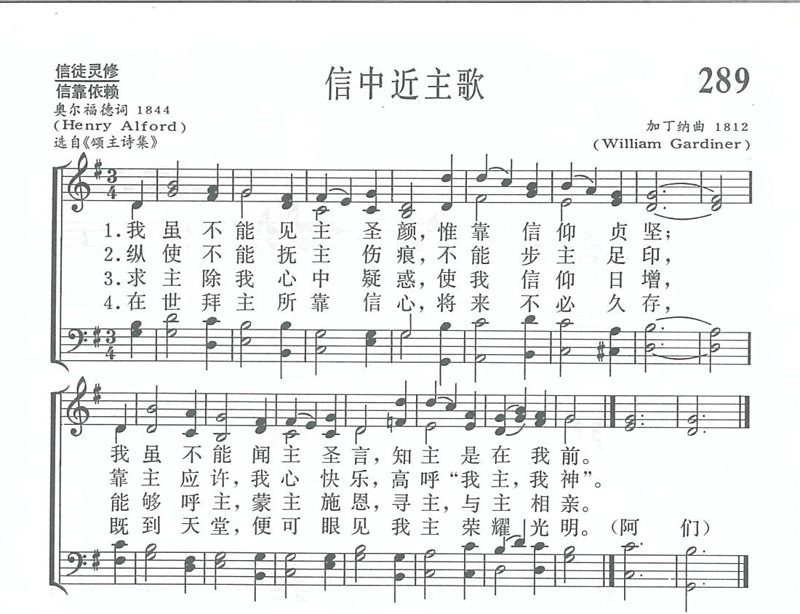
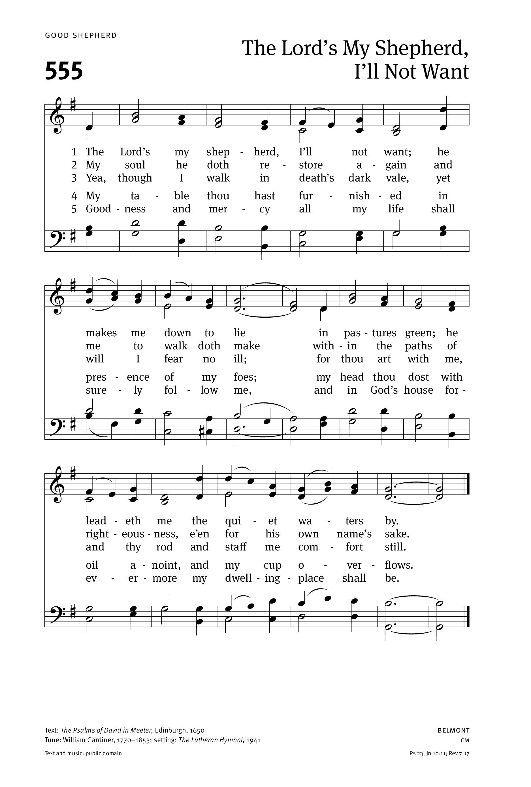
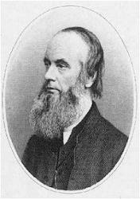

|
|
讚美詩(新編) |
|
1 We walk by faith, and not by sight, 2 We may not touch his hands and side, 3 Help then, O Lord, our unbelief; 4 For you, O resurrected Lord, 5 Lord, when our life of faith is done, |
|
|
https://www.zanmeishige.com/tab/13962.html?songbook=1&index=289

 |
|
|
|
|

https://youtu.be/nsZkmVdehso - We walk by faith Lyrics by Henry Alford Sung by Marty Haugen
https://youtu.be/6hk_7EUvwv8 -
Lyrics with Orchestral Music For Worship Hymn / Song : - We Walk By Faith
And Not By Sight.
https://youtu.be/z_khk1Y1IB8
| Text: | We Walk by Faith and Not by Sight |
| Author: | Henry Alford |
| Tune: | BELMONT |
| Composer: | William Gardiner, 1770-1853 |
| Short Name: | Henry Alford |
| Full Name: | Alford, Henry, 1810-1871 |
| Birth Year: | 1810 |
| Death Year: | 1871 |
Alford, Henry, D.D.,

son of the Rev. Henry Alford, Rector of Aston Sandford, b. at 25 Alfred Place, Bedford Row, London, Oct. 7, 1810, and educated at Trinity College, Cambridge, graduating in honours, in 1832. In 1833 he was ordained to the Curacy of Ampton. Subsequently he held the Vicarage of Wymeswold, 1835-1853,--the Incumbency of Quebec Chapel, London, 1853-1857; and the Deanery of Canterbury, 1857 to his death, which took. place at Canterbury, Jan. 12, 1871. In addition he held several important appointments, including that of a Fellow of Trinity, and the Hulsean Lectureship, 1841-2. His literary labours extended to every department of literature, but his noblest undertaking was his edition of the Greek Testament, the result of 20 years' labour. His hymnological and poetical works, given below, were numerous, and included the compiling of collections, the composition of original hymns, and translations from other languages. As a hymn-writer he added little to his literary reputation. The rhythm of his hymns is musical, but the poetry is neither striking, nor the thought original. They are evangelical in their teaching, but somewhat cold and conventional. They vary greatly in merit, the most popular being "Come, ye thankful people, come," "In token that thou shalt not fear," and "Forward be our watchword." His collections, the Psalms and Hymns of 1844, and the Year of Praise, 1867, have not achieved a marked success. His poetical and hymnological works include—
-
(1) Hymns in the Christian Observer and
the Christian Guardian, 1830. (2) Poems
and Poetical Fragments (no name), Cambridge, J. J.
Deighton, 1833. (3) The School of the Heart, and
other Poems, Cambridge, Pitt Press, 1835. (4) Hymns for
the Sundays and Festivals throughout the Year, &c.,Lond., Longman
ft Co., 1836. (5) Psalms and Hymns, adapted for the
Sundays and Holidays throughout the year, &c, Lond., Rivington,
1844. (6) Poetical Works, 2 vols., Lond.,
Rivington, 1845. (7) Select Poetical Works,
London, Rivington, 1851. (8) An American ed. of his Poems,
Boston, Ticknor, Reed & Field, 1853(9) Passing away,
and Life's Answer, poems in Macmillan's
Magazine, 1863. (10) Evening Hexameters, in Good
Words, 1864. (11) On Church Hymn Books, in
the Contemporary Review, 1866. (12) Year
of Praise, London, A. Strahan, 1867. (13) Poetical
Works, 1868. (14) The Lord's Prayer, 1869.
(15) Prose Hymns, 1844. (16) Abbot
of Muchelnaye, 1841. (17) Hymns in British
Magazine, 1832. (18) A translation of Cantemus
cuncti, q.v.
-- John Julian, Dictionary of Hymnology (1907)
Tune Information
| Title: | BELMONT (Gardiner) |
| Composer: | William Gardiner (1812) |
| Meter: | 8.6.8.6 |
| Incipit: | 53217 76155 54332 |
| Key: | A Major |
| Copyright: | Public Domain |
第289首 信中近主歌 We walk by faith，and not by sight _H.AlfordH.Alford
经文：“多马说：‘我的主，我的神!’耶稣对他说：‘你因看见了我才信；那没有看见就信的有福了’”(约20：28—29)。
这首诗是英国圣公会坎特伯雷大座堂主任牧师①奥尔福德(H.Alford，1810—1871)所写。原载于奥氏所著的《诗篇与圣诗》(1844)，题为《圣多马》，显然是根据约翰福音第2O章26至29节多马释疑那段经文写的。
奥尔福德出生于第五代的牧师世家，自青年时代就敬虔爱主。16岁受坚振礼(见第3O首注①)后在自己的圣经上写道：“我一定从今日起在神面前、在我心灵深处与神重立新约，今后决心尽力竭力为主作工。”1832年他从剑桥大学三一学院毕业后留校任教，兼受圣职，不久即以布道家、圣经学者闻名。他用了2O年译注希腊文新约，成为19世纪研究圣经原文的权威。他还著有《诗集》二卷，先后在英伦和美国波士顿出版。他曾编辑翻译过许多首赞美诗。1857年起任坎特伯雷座堂主任牧师，1871年去世。在他的墓碑上，按照他的遗愿刻着：“前往耶路撒冷旅客的住店。”
《新编》第310首《前行号令歌》也是他的名著。
这首诗所用的曲调是英国著名业余古典音乐家加丁纳(W.Gardiner，1770—1853)所谱，他父亲是织袜厂厂长，他自已是个织袜商人。但他对于音乐表现出特殊的爱好，关心教会音乐，指摘当时流行的、庸俗的唱诗篇曲调是“新教会的敬虔与不圣洁诗歌的结合，是用轻浮与不敬虔的废物所编成的歌曲的泛滥”。
他推广古典音乐，特编辑一部《神圣的曲调(Sacred Melodies)》，将海顿、莫扎特、贝多芬等人的名曲，汇集起来为六巨册，以供英国各教会选用。他尤为景仰贝多芬，是第一位介绍贝多芬作品到英国的音乐家。他利用多次出访欧洲的时机结识、拜访当时的著名音乐家并聆听他们的演奏。在德国波恩时适逢贝多芬塑像揭幕，他参加了典礼，并与英国维多利亚女王一同签名留念。这首曲调堪称为他的代表作，典雅庄严，节奏平顺。
①座堂主任牧师英文称为Dean，我国有的地方译作“教长”。